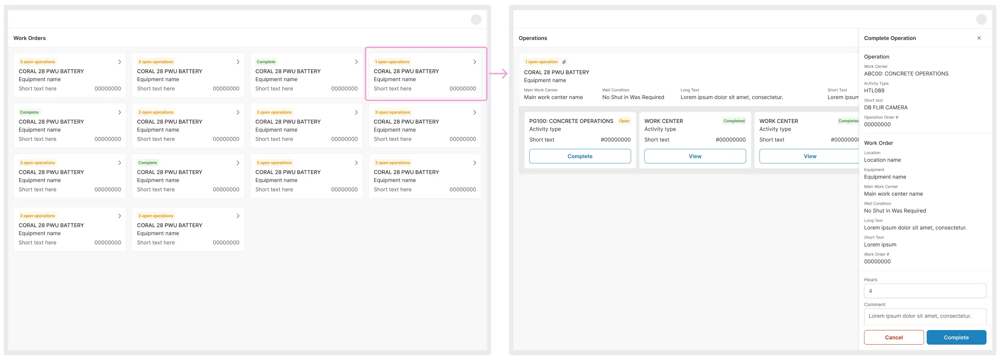
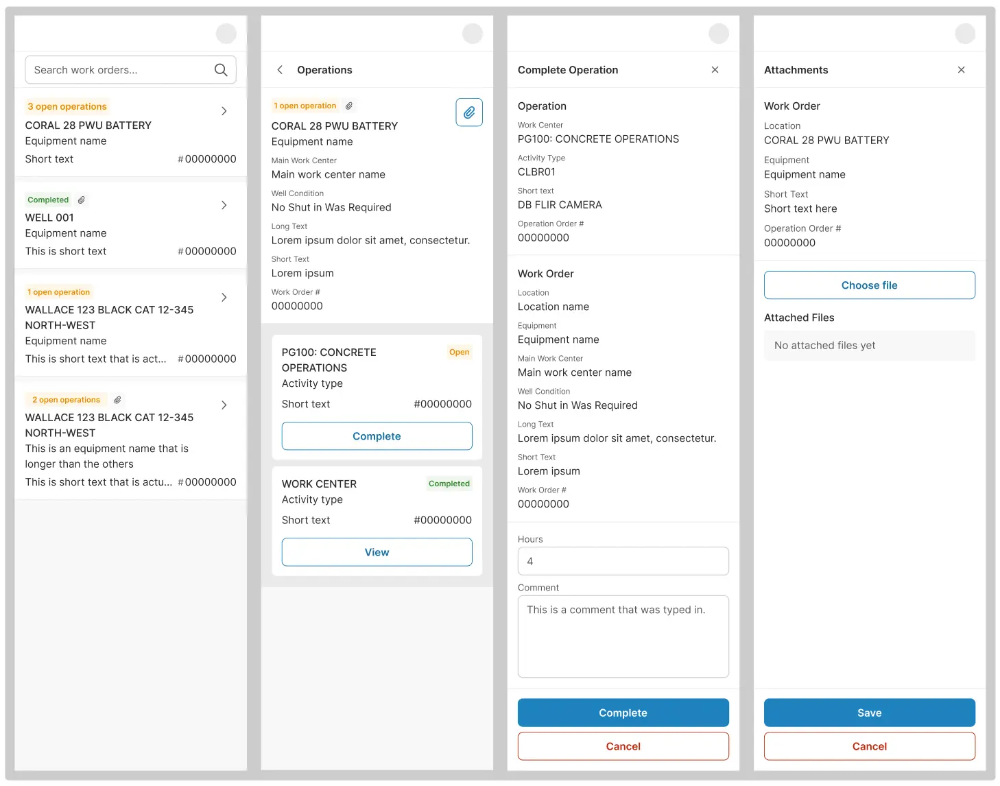

Progressive Web App for Field Tasks
The goal was to create a Progressive Web App (PWA) that allows contractors and employees to complete tasks in the field when the native app is unavailable. I started by analyzing the workflow of the current mobile app to ensure a consistent experience. Then, I designed desktop mockups to present a new layout tailored for larger screens while maintaining a seamless transition to mobile.
 To emphasize the responsive behavior, I built a simple coded prototype instead of relying on additional static Figma frames. This interactive prototype allowed the dev team to explore the design in action, streamlining their workflow by reducing the need to navigate static canvases.
Coded Prototype